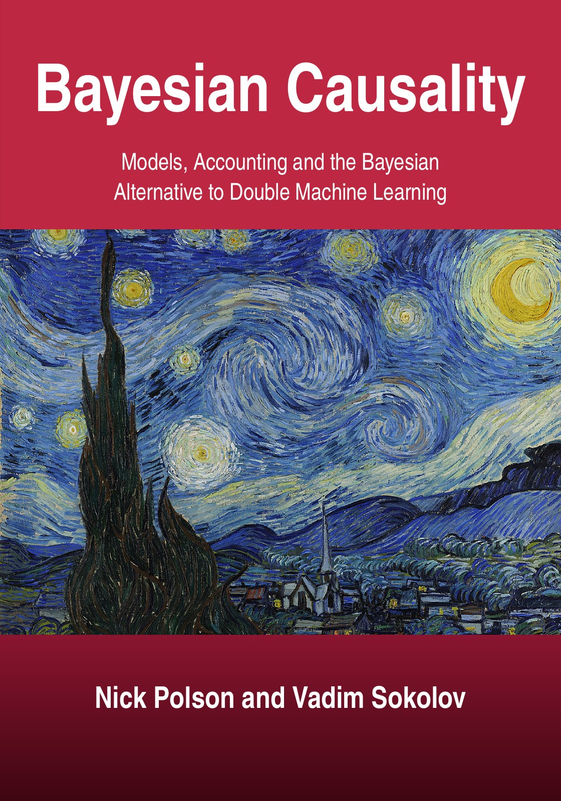

Bayesian Causality Models, Accounting and the Bayesian Alternative to Double Machine Learning
By Nick Polson and Vadim Sokolov.


Description
Ask double machine learning (DML) how much eligibility for a 401(k) plan raised household savings and it returns one number. Ask for the effect at the median household and each question needs a new derivation and a new run. This book builds one probability model for outcomes given treatment and covariates and reads every causal quantity off its posterior draws: the average effect, the effect in each subgroup, the probability of causation, and the decision that follows. The central idea is an accounting identity. The average effect is an average of fitted contrasts over a population the analyst chooses, so a change of population changes the answer in a way the model states. Under one stable odds ratio the average effect fills a whole range, and the posterior selects the group on which an effect is stable. For DML the book proves an exact decomposition of the error, and that no interval is both uniformly valid and of bounded expected length. It studies regularization induced confounding and the coupled horseshoe posterior that reduces it. In the simulations the book reports, with 200 observations and five strong confounders, the posterior trails DML slightly with 50 covariates, and DML is more accurate with 150 and with 300 covariates; with thirty weak confounders among 150 covariates the order reverses. Later chapters cover instruments, bounds, difference in differences, causal decisions and a Bayesian model of a merger, whose price effect is identified by the demand parameters and the form of competition. Every exercise has a solution, and the code folder of this repository holds the scripts, including many of those behind the solutions of Appendix D (in book_scripts/solutions/), apart from the results that Appendix F lists as quoted or absent. Version 1.2.0 opens the book with the Lanarkshire milk experiment and adds the Moscow election observers and the Gujarat pollution audits to Chapter 1. The book is written for statisticians, econometricians and data scientists.
How to cite
Polson and Sokolov (2026), Bayesian Causality: Models, Accounting and the Bayesian Alternative to Double Machine Learning, edition 1, https://doi.org/10.5281/zenodo.23961396.
@book{polsonsokolov2026bayesian_causality_book,
author = {Polson, Nick and Sokolov, Vadim},
title = {{Bayesian Causality: Models, Accounting and the Bayesian Alternative to Double Machine Learning}},
year = {2026},
publisher = {Independently published},
doi = {10.5281/zenodo.23961396},
url = {https://vsokolov.org/books/bayesian_causality_book/}
}Main results
- Range of the average effect under a stable odds ratio (Proposition 4.3, page 55): With one conditional odds ratio e^psi for every unit, the average risk difference over all possible case mixes fills the interval from 0 to tanh(psi/4), so the same stable effect supports very different averages.
- The posterior selects the group (Theorem 4.19, page 65): The log posterior odds of one effect scale against another, or against the saturated model, move linearly in n at a rate equal to the difference of their information gaps, with a log n term for the difference in the number of parameters.
- Exact error decomposition of the partialling out estimator (Lemma 5.3, page 83): The error of the partialling out estimator splits exactly, with no approximation, into a noise term, a cross term with mean zero under cross fitting and a bias term built from the two fitting errors, namely their product minus the effect times the squared treatment error.
- Two channels (Corollary 5.4, page 84): With the fits held fixed the estimator converges to the truth plus a bias fixed by the inner product of the two fitting errors and the squared treatment error.
- No uniformly valid interval of finite length (Proposition 7.8, page 127): For a fixed sample size, no confidence set for the partialling out effect can both have uniform coverage over all treatment variances and have expected length bounded over that class; the proof follows Gleser and Hwang (1987) and Dufour (1997).
- Identification of the merger effect (Proposition 20.5, page 345): Given the premerger data, the price effect of a merger is a function of the nonlinear demand parameters and the form of competition alone, so the agency question is a question about their posterior.
All 20 results of the book (19 proved, 1 conditional) are on the page Results by chapter, each with its statement, status and number.
License: Text, figures and PDF: CC BY 4.0. Code: MIT.
This page is generated from the book’s repository (main). The numbers and pages are those of the PDF, version 1.2.0.